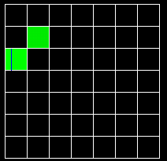

At the top of the applet on the left you will see the box, oscillating in its fundamental mode. Below the box you will see a series of grids showing each normal mode's contribution to the vibration. In each grid, the modes are laid out in the following order:
| 0,0,p | 1,0,p | 2,0,p | ... |
| 0,1,p | 1,1,p | 2,1,p | ... |
| 0,2,p | 1,2,p | 2,2,p | ... |
| ... | ... | ... | ... |
and each grid has a different value of p, as shown below:
| p=0 | p=1 | p=2 | p=3 |
| p=4 | p=5 | p=6 | p=7 |
So for example, the top left corner in the top left grid is the 0,0,0 mode, and the top left corner in the bottom right grid is the 0,0,7 mode.
The notation m,n,p refers to the mode having an acoustic pressure proportional to cos(mx)cos(ny)cos(pz), where x ranges from 0 to pi.
Each element of the grid has a color which indicates the presence or absence of the mode it represents. Black means the mode is not present; green means the mode is present with a positive coefficient, and red means it is present with a negative coefficient. So in this example, mode 0,1,0 has a positive coefficient, mode 2,0,0 has a negative one, and the rest of the modes are absent:
In addition, each mode may have a phase shift, which indicates that its oscillatory cycle leads or lags the others. This is indicated by a blue line. In this example, mode 0,2 has a blue line about 1/3 of the way across the width of the box, which means a phase shift of about 1/3 the maximum possible. The maximum is pi*2, so this shift is pi*2/3. Mode 1,1 is also present but does not have a phase shift.

A phase shift is normally hard to detect. If the applet is stopped, then by altering the phase of a mode you can see the mode oscillate. If the applet is running it is much harder to tell, except in a case which will be explained later.
You can add or remove a mode by clicking on it. If you click and drag up and down you can fine-tune the magnitude of the mode. If you drag left and right you can alter the phase shift.
For performance reasons, only 10 modes can be active at a time.
The Mouse popup controls what happens when you click on the box. If you set it to Adjust view angle or Adjust view zoom, you can adjust the orientation or size of the 3-d view by clicking and dragging on the box.
The Stopped checkbox can be used to stop the oscillation for a moment.
The Show Frequencies checkbox can be used to show or hide the spectrum of mode frequencies. Each mode is represented on the spectrum by a vertical line. Higher frequencies are on the right. In some cases, multiple modes will have the same frequency. This is called degeneracy. When that happens, the line for that frequency will be taller than normal. The more modes have the same frequency, the taller the line.
The Alternate Rendering checkbox is used to speed up rendering, but it actually slows things down on some machines. Also for large windows and low resolutions it is usually slower. (Internally, it uses the MemoryImageSource class instead of drawing a bunch of rectangles.)
The Simulation Speed slider controls how fast the simulation runs.
The Brightness slider can be used just like the brightness on a TV, to brighten dim areas of the box.
The Image Resolution slider can be used to generate a higher quality image. If you move it to the right, it will increase the resolution of the image, but it will also slow things down, so be careful.
The Width and Height sliders will adjust the width or height of the box. This changes the frequency spectrum. The depth can't be changed.
Normally each mode has a different frequency. However in some cases, several modes can have the same frequency. This is called degeneracy. The presence or absence of degeneracy depends on the dimensions of the box. By default the width, height, and depth are equal, which means it is a cube. In this case, all the m,n,p modes are degenerate, because they have the same frequency as the n,m,p modes, and the m,p,n modes, and the p,n,m modes, and so on. If the width, height, and depth are not all equal, there usually is no degeneracy. There may be some if two or more of the dimensions have a ratio equal to an integer or a simple fraction. The width and height slider ranges from 1/2 to 3, so if either slider is set to one of those extremes, there will be degeneracy.
When two or more modes have the same frequency, each one is shown in yellow, like so:

The interesting thing about degenerate modes is that if you combine them, you get a new mode that oscillates with simple harmonic motion, just like any other mode. Since both modes are oscillating at the same rate, you can't tell them apart. If one of the modes has a phase shift relative to the other one, then the wave will change shape at a rate equal to the frequency of the modes.
The frequencies are proportional to:
where Lx is the width of the box, Ly is the height, and Ly is the depth.